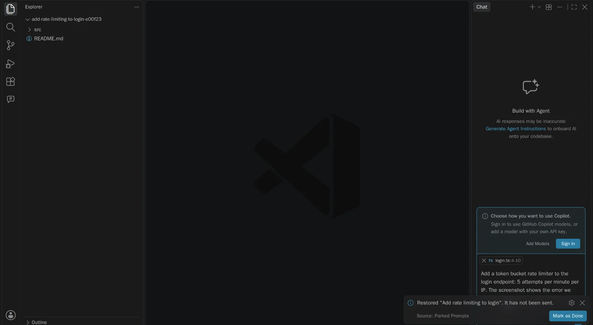

One prompt. Every place you work.
How Parked Prompts connects to VS Code chat, the Agents window, Copilot canvases, Git, and your repository.
At a glance
What works where
VS Code and Copilot allow different things in each place, so each surface does what it can, and says so when it can't.
| What you can do | Chat view | Agents window | Copilot canvas |
|---|---|---|---|
| Write a prompt with images and files | Sidebar composer | Text, then pick files | Composer in the canvas |
| Restore into the chat input, unsent | With attachments | Text, with files by path | No: it sends instead |
| Park what you typed in chat | Text only | Text only | No |
| Send now, or queue after this turn | No | No | Yes |
| Send when the agent goes idle | No | No | Yes, while it stays open |
| Run in a new worktree | Yes | Not tested yet | No |
| Move to the repository to share | Yes | Not tested yet | Yes |
| Agent can list, read, and save drafts | No | No | Yes, but never send |
Chat view
VS Code has no API for the chat input, so restoring goes through one small adapter that calls its chat commands.
- A new chat is the default, because filling an input replaces what's there
- Restoring to the current chat warns first, if it finds text you typed
- A file that's gone is flagged, rather than silently left out

// isPartialQuery is what keeps it from sending. await commands.executeCommand('workbench.action.chat.newChat'); await commands.executeCommand('workbench.action.chat.open', { query: prompt.body, isPartialQuery: true, attachFiles: [uri, { uri, range }], });
Agents window
The same chat command is registered in this window but does nothing there, which we only found by running it. So the extension detects the window and uses the one that works.
- No setting to change: the manifest declares support for this window
- This command takes text only, so files are listed by absolute path
- There are no sidebar views here, so it uses quick picks and input boxes

// Without prefillPrompt, this command sends. A test pins it down. await commands.executeCommand('workbench.action.sessions.newChat', { prompt: textWithFilePaths, prefillPrompt: true, });
Copilot canvas
A canvas is a panel that belongs to a Copilot session, so unlike an extension it can see when the agent is busy and can deliver a message with attachments.
- Built with canvas-kit, in TypeScript and React, and tested in light, dark, and high contrast
- Follows the store on disk, so prompts parked in the editor appear here live
- Every send or arm action is only available to the page, never the agent


// expose: 'ui' means the agent never gets this as a tool. send_now: action({ description: 'Send a prompt to this session now.', expose: 'ui', input: promptRef, run: async (ctx, ref) => { const prompt = await getPrompt(ctx.state.repo, ref) await assertConfirmed(ctx.state.repo, prompt) await deliver(ctx, prompt, 'immediate', ctx.now()) }, })
Git worktrees
When you don't want to wait, a worktree gives the prompt its own folder and branch. It takes only stable VS Code APIs and plain Git, and your attachments come along.
- Confirm the branch and folder, then it runs
git worktree add - It leaves a one-time marker in the store, and opens the folder in a new window
- That window takes the marker and restores the prompt into a new chat, unsent

Your repository
Commit a prompt to .github/parked-prompts/ and your team has it too: a release checklist, a migration, or a review you want done the same way each time.
- Moving lists exactly what will be added, and warns about screenshots and secrets
- Your local path is removed, and nothing is committed for you
- Everyone else reads it and says yes first. Here's why

How they connect
They don't talk. They share a folder.
The extension and the canvas never call each other. Both read the same files through the same small library, so a prompt is just a folder you can read yourself.
# Personal prompts, private to your user ~/.parked-prompts/ 20261105-160520-a1b2c3/ prompt.md # Frontmatter, then the prompt as you wrote it attachments/ login-error.png # Images and outside files are copied in # Shared prompts, committed by you your-repo/.github/parked-prompts/ 20261105-160520-a1b2c3/ prompt.md
How we know
Run on real builds, not guessed from docs.
These chat commands are internal to VS Code, so every assumption was tested against the real product before anything was built on it, and a harness re-checks them on new builds.